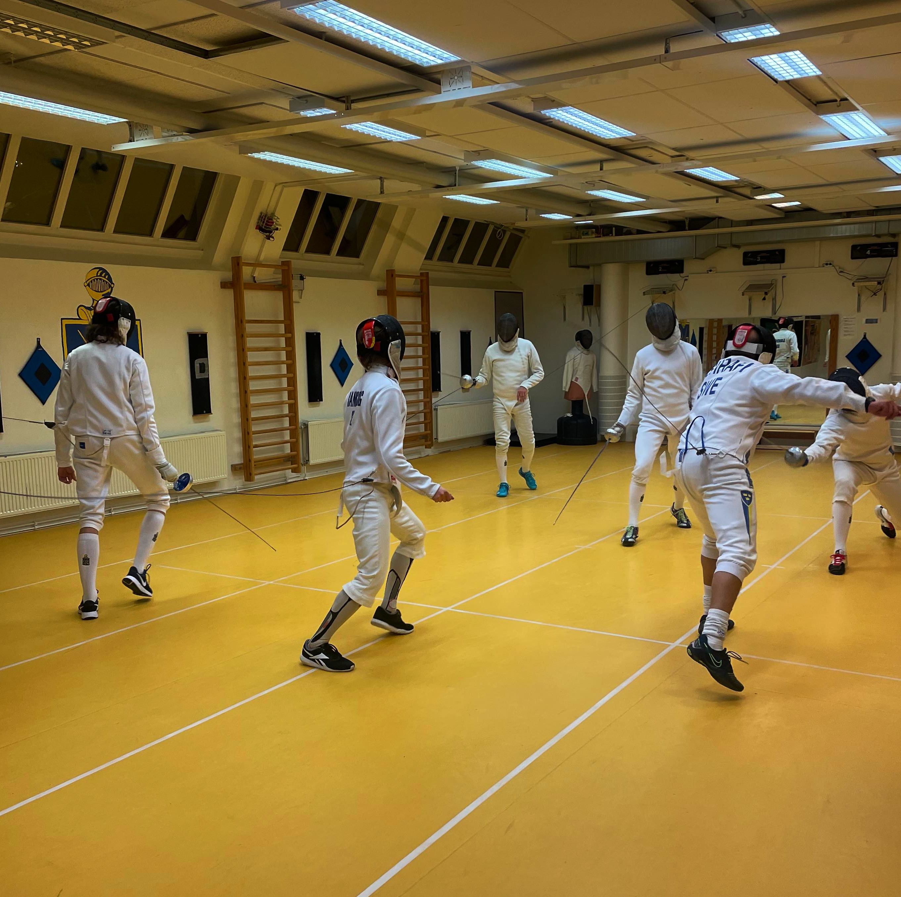
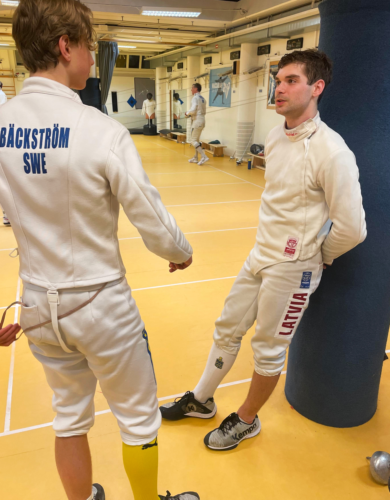
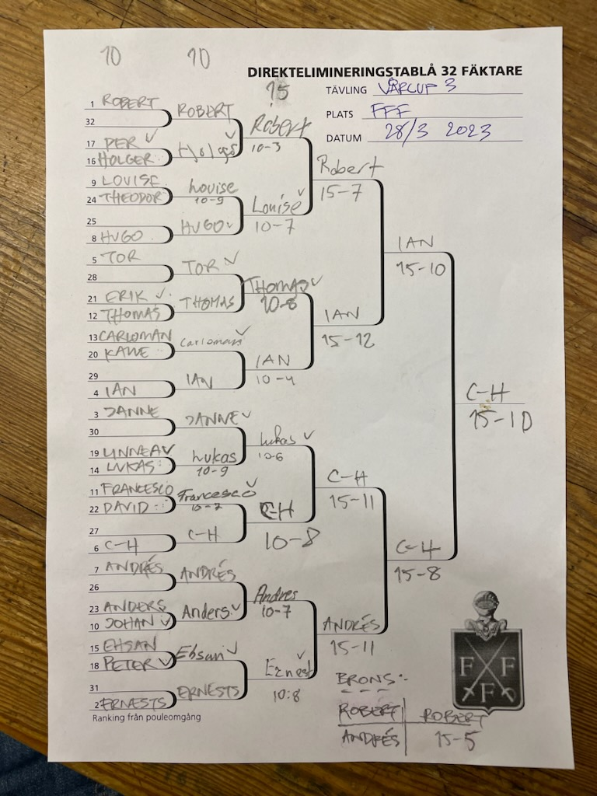
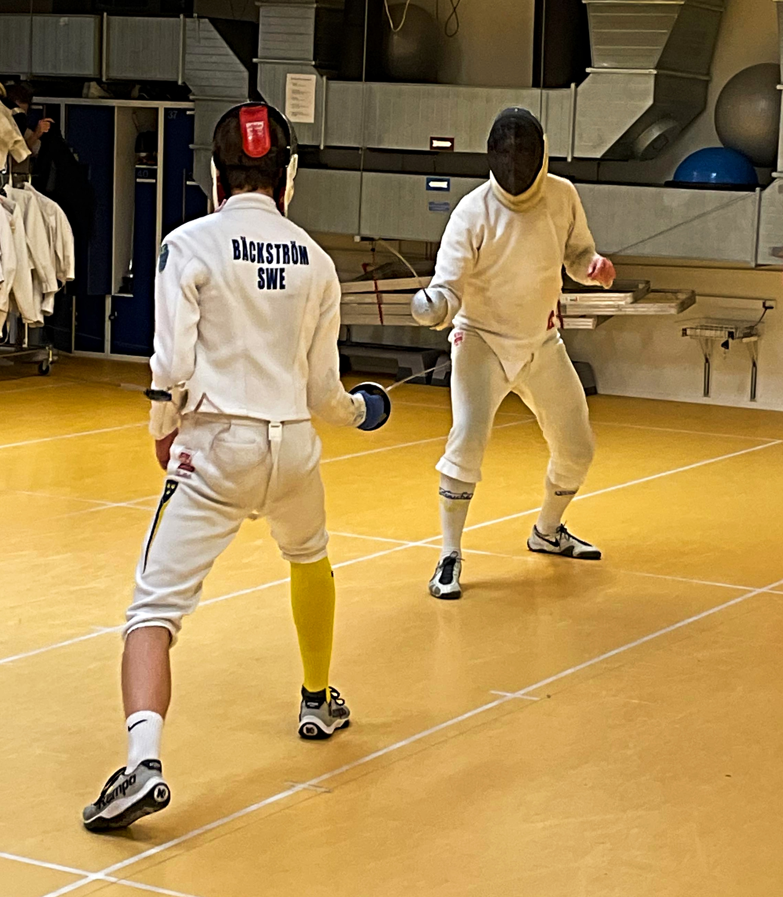
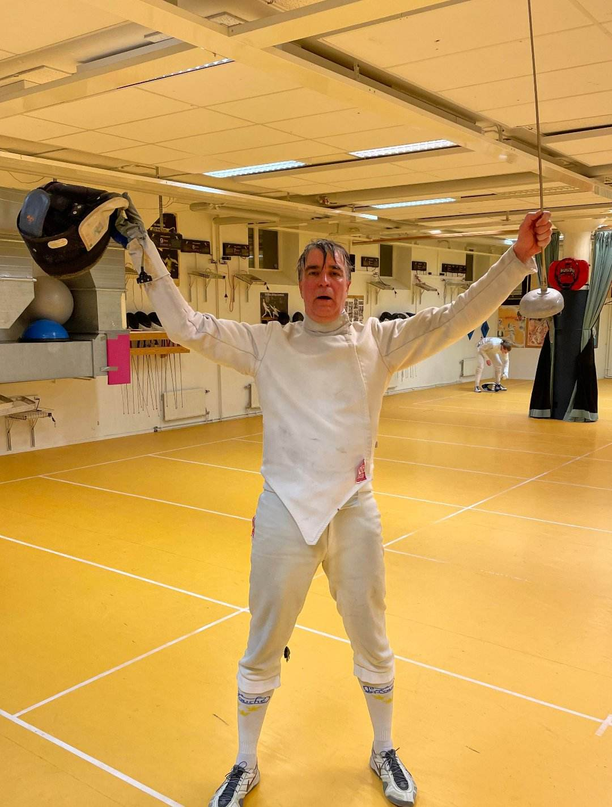

Knappt har ekot efter Roberts segertjut från förra deltävlingen hunnit eka ut innan den tredje deltävlingen i årets Vårcup sköljer över fäktklubben, denna gång med inte mindre än 24 kombattanter. För att sätta allt i sitt rätta perspektiv börjar vi med en titt tillbaka.
Tillbakablick
Årets Vårcup kan närmast beskrivas som ett furiöst pokerspel med ära och ryktbarhet i potten. I den första given var det Ian som tog hem spelet och visade samtidigt att han, som talesman för de yngre, på ett fräckt sätt tänkte utmana den rådande hegemonin där de gamla hävdat sin sedvanerätt. Kort sagt: en ny tid randas.
Dessvärre visade det sig att de gamla hjulspåren inte låter sig suddas ut så lätt. Robert spelade i den andra deltävlingen ut ess efter ess och kunde på ett betryggande sätt plocka hem den andra given. Sammanfattning: de gamla slår tillbaka.
Sedan dess har CH med eftertryck presenterat sig på den externa fäktscenen med en kvartsfinalplats i Fillol. Våra yngre elittrupper svarade med att dra ut på plundringståg runt om i Svea rike och återvände med rikligt byte från JSM i Kalmar där guld (damer) och brons (herrar) i lag samt guld och silver individuellt i damtävlingen bärgades. Dessutom tog sig både Francesco och Ian till kvartsfinal individuellt.
Det var i detta spända läge som dörrarna öppnades för ytterligare en batalj med höga insatser den 28 mars i herrens år 2023.
Poulomgången
Tävlingen började i vanlig ordning med en pouleomgång. Denna gång med 3 stycken 8-mannapouler från vilken förra deltävlingens suverän Robert generöst delade ut stötar i alla riktningar men undgick själv skickligt att bli träffad. För denna insats premierades han med en 1:a ranking. Bakom honom stod också Ernest, Janne och Ian för kraftfulla insatser och rankades efter Ian i nämnd ordning.

32-tablån
I 32-tablån kunde de 8 bäst rankade från den tidigare omgången stå över men efter några häftiga möten kunde Holger, Louise, Carloman, Lukas, Francesco, Anders och Ehsan göra sig klara för nästa del av tävlingen.

16-tablån
Robert gick nu återi igen in i tävlingen med samma resultat som tidigare, hans aura av oövervinnlighet förstärktes ytterligare. Louise visade återigen varför hon är en av rikets mest omtalade fäktare och Thomas precisionsskytte gav honom seger i sin match mot Tor. Ian fortsatte oavtrutet att roffa åt sig. Lucas och Janne drabbade samman i en kamp mellan giganter, från vilken Lucas utgick med segern och CH lyckades med möda betvinga Francesco. Ernest började dock mattas något men gick ändå vidare till nästa omgång.
Kvartsfinaler
I den första kvartsfinalmatchen fick Robert tufft motstånd i form av Louise, men tack vare sin starka dagsform lyckades Robert ta sig förbi även detta hinder. Bredvid drabbade Thomas och Ian samman i en hård envig som till slut föll ut till Ians fördel. CH som nu fått upp ångan ordentligt lyckades betvinga Lucas. Tyvärr lyckades inte Ernest inte hålla koncentrationen uppe och bestraffades på grund av detta med en knapp förlust.
Semifinaler
Den första semifinalen blev ett toppmöte mellan två av kvällens starkast lysande stjärnor. Inför denna match fanns det mycket som talade till Roberts fördel, men några i publiken mumlade att det fanns goda skäl att se upp med Ian. Ians tempväxlingar firade stora triumfer och en av kvällens stora överraskningar var ett faktum.
Den andra semifinalen blev dock en besvikelse. Publiken hade väntat sig en tuff drabbning mellan Ernest och CH, men fick istället se en grå tillställning där CH utan minsta ansträngning gjorde processen kort med Andrés.
Finaler
Nu var sanningens ögonblick äntligen inne, är tiden för ungdomens herravälde ett faktum, eller skulle de gamle ytterligare en gång hålla kvar sitt grepp om makten? Efter första hälften av matchen hängde denna fråga fortfarande i luften när Ian och CH dansade runt utbytte tjuvnyp. Men därefter var det CH som först hittade en lucka, varefter han sakta men obevekligt lyckade skaffa sig ett övertag som Ian inte kunde ta igen. Någon minut senare kunde CH med ett faderligt leende på läpparna utropa sig till segrare och samtidigt lägga ytterligare en titel till sin omfångsrika meritlista. Stort grattis CH!

I matchen om tredjepriset hade Robert hämtat sig från överraskningen i semifinalen och återgick till samma resoluta fäktning som han tidigare under kvällen visat upp. I brist av värdigt motstånd innebar detta en överlägsen seger.
Resultatsammanställning
Den fullständiga tablån såg således ut så här:
Eller om ni föredrar resultaten i tabellform:
| Resultat från deltävling 3 | ||
| Vårcupen 2023 | ||
| Namn | Placering | Poäng |
|---|---|---|
| C-H Wendt | 1 | 32 |
| Ian Bäcksröm | 2 | 26 |
| Robert Brolin | 3 | 21 |
| Andrés Gomez | 4 | 19 |
| Ernest Cimborevics | 5 | 14 |
| Louise Ulltjärn | 6 | 14 |
| Thomas Schiöler | 7 | 14 |
| Lukas Marcos | 8 | 14 |
| Jan Tivenius | 9 | 8 |
| Tor Forsse | 10 | 8 |
| Hugo Wik | 11 | 8 |
| Francesco Pelletta | 12 | 8 |
| Rusu Carloman | 13 | 8 |
| Ehsan Ashrafi | 14 | 8 |
| Holger Claesson | 15 | 8 |
| Anders Brunelius | 16 | 8 |
| Johan Ström | 17 | 4 |
| Per Sandgren | 18 | 4 |
| Peter Franzén | 19 | 4 |
| Linnea Eriksson | 20 | 4 |
| Kalle Fröde | 21 | 4 |
| Erik Lahomaa | 22 | 4 |
| David Ramsberg | 23 | 4 |
| Teodor Dahlin | 24 | 4 |
Trots denna seger för de gamla, så har ändå den nya generationens fäktare i egenskap av Ian klättrat upp till en total ledning i Vårcupen. CH har närmat sig Robert i kampen om 2:a platsen och Ernest har ett gott utgångsläge för att klättra vidare. Så här ser den kompletta listan ut
| Totalställning efter 3 deltävlningar | |||||
| # | Namn | Deltävling nr. | Totalt | ||
|---|---|---|---|---|---|
| 1 | 2 | 3 | |||
| 1 | Ian Bäcksröm | 32 | 14 | 26 | 72 |
| 2 | Robert Brolin | 14 | 32 | 21 | 67 |
| 3 | C-H Wendt | 8 | 26 | 32 | 66 |
| 4 | Ernest Cimborevics | 14 | 21 | 14 | 49 |
| 5 | Andrés Gomez | 26 | NA | 19 | 45 |
| 6 | Lukas Marcos | 8 | 19 | 14 | 41 |
| 7 | Jan Tivenius | 21 | 8 | 8 | 37 |
| 8 | Tor Forsse | 14 | 14 | 8 | 36 |
| 9 | Thomas Schiöler | 8 | 8 | 14 | 30 |
| 9 | Francesco Pelletta | 8 | 14 | 8 | 30 |
| 11 | Holger Claesson | 8 | 8 | 8 | 24 |
| 12 | Louise Ulltjärn | 8 | NA | 14 | 22 |
| 13 | Rusu Carloman | 4 | 8 | 8 | 20 |
| 14 | Karsten Kaping | 19 | NA | NA | 19 |
| 15 | Eden Renda | 14 | 4 | NA | 18 |
| 16 | Anders Brunelius | 8 | NA | 8 | 16 |
| 16 | Johan Ström | 4 | 8 | 4 | 16 |
| 16 | Ehsan Ashrafi | NA | 8 | 8 | 16 |
| 19 | Daman | NA | 14 | NA | 14 |
| 20 | Mathias Elmfeldt | 8 | NA | NA | 8 |
| 20 | Benedict Chambers | 4 | 4 | NA | 8 |
| 20 | Erik Lahomaa | 4 | NA | 4 | 8 |
| 20 | Curt Benkestock | 4 | 4 | NA | 8 |
| 20 | Leopold Germer | 4 | 4 | NA | 8 |
| 20 | Teodor Dahlin | 4 | NA | 4 | 8 |
| 20 | Caspian | NA | 8 | NA | 8 |
| 20 | Ludvig Dahlström | NA | 8 | NA | 8 |
| 20 | Hugo Wik | NA | NA | 8 | 8 |
| 29 | Frederick Marelius | 4 | NA | NA | 4 |
| 29 | Per Sandgren | NA | NA | 4 | 4 |
| 29 | Peter Franzén | NA | NA | 4 | 4 |
| 29 | Linnea Eriksson | NA | NA | 4 | 4 |
| 29 | Kalle Fröde | NA | NA | 4 | 4 |
| 29 | David Ramsberg | NA | NA | 4 | 4 |
| Vårcupen 2023 | |||||
Så nu när det återstår 2 tävlingar är det hög tid att lägga på ett extra kol på träningarna så att ni gör er redo för upploppet. Kör hårt!
Vi avslutar med en bild över en överlycklig segrare.
